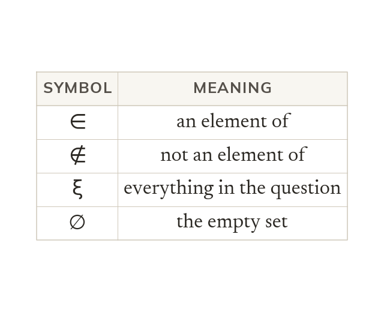
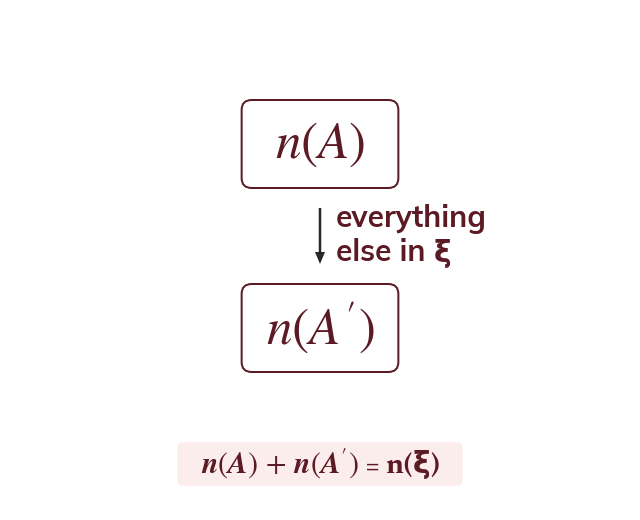
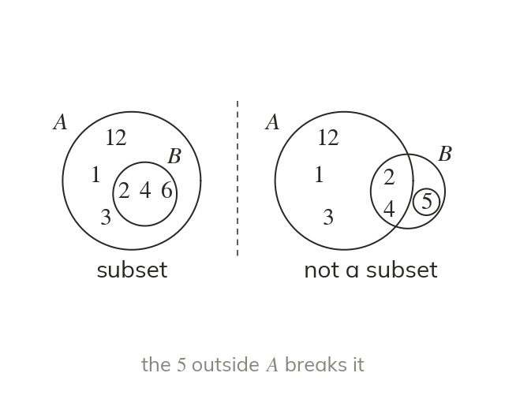
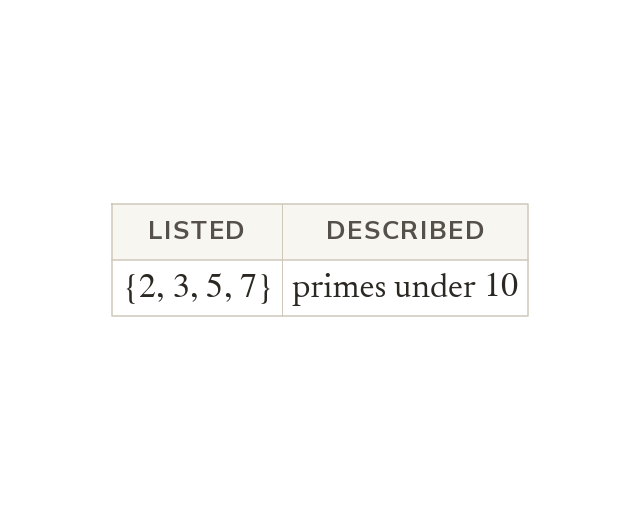

You already used a Venn diagram back in Topic to find the HCF and LCM of two numbers, without ever writing down what a “set” actually is. Today you learn the notation mathematicians use to describe sets precisely – the exact language behind that diagram.
By the end you’ll know…
A set is a collection of distinct elements, named with a capital letter and listed inside curly brackets.
ξ is the universal set, everything under consideration in the question; the empty set has no elements at all.
'in' means is an element of, and '∉' means is not.
A' is the complement of A: everything in the universal set that is not in A.
is the number of elements in and = n(ξ).
B subset-of A means every element of B is also an element of A.
By the end you can
G4Use set notation to describe sets, find complements and state
G5Identify subsets and describe groups of numbers (integers, primes, multiples) using set notation.
Work down the page at your own pace. Write every answer in your book first, then click to check it.
01
Do Now
About 5 minutes
1
List the factors of
2
List the first four multiples of
3
List the prime numbers between and
4
Write using index notation.
Remember these?
LAST LESSONMake the subject of
— remember both roots.
LAST WEEKSolve
LAST TERMWhich is bigger: of or of ?
— against
LAST YEAR'Closer to A than to B' — which construction gives the boundary of this region?
The perpendicular bisector of AB.
02
Learn
Read each card, then follow the worked examples one step at a time.

What a set is
A set is a collection of distinct elements, written in curly brackets. ∈ means “is an element of”. ξ is the universal set: everything in the question.
A set is a collection of distinct elements, written with a capital letter and listed inside curly brackets, e.g. ∈ means “is an element of” and ∉ means “is not an element of”. The universal set, written ξ, is everything under consideration in the question; the empty set ∅ has no elements at all.

Complement and count
is the complement: everything in ξ that is not in is a count, not a set. So = n(ξ).
is the complement of – everything in ξ that is not in is the number of elements in (a count, not a set), and because every element of ξ is either in or in but never both, = n(ξ).
THE COMPLEMENT
ξ ..., (the even numbers in ξ). Find state whether ∈ and state
List ξ without A(A' is everything in ξ that is not in A)
Is ∈ ? ∉ (A holds only even numbers, and is odd)
Count the elements of A counts the elements; it is not the set itself)
Check
n(ξ). Correct.
YOUR TURN · a
With ξ ..., and find and state
and ; check = n(ξ).
YOUR TURN · b
ξ ..., (the multiples of ∈ ξ). Find state whether ∈ and state (Hint: which numbers from to are left once you remove B?)
; 8∉B; ; check
03
Check your understanding
Pick an answer. If it's wrong, the feedback tells you which mistake it was.
What does A' represent?
Yes. A' is everything in ξ that isn't ∈ A.
Not quite. That's a count. is a set: everything in ξ not in
Not quite. That's A itself. A' is everything else in ξ.
Not quite. A' only uses elements of ξ. Leave out anything outside ξ.
ξ (the square numbers in ξ). What is ?
Yes. Take and out of ξ:
Not quite. That's C itself. C' is everything else in ξ.
Not quite. and aren't ∈ ξ. C' only uses the numbers to
Not quite. is a count. is the set
ξ (the primes in ξ). What is ?
Not quite. is a count, not a set: has elements.
Yes. has elements, so
Not quite. is n(ξ). Count only the elements of D.
Not quite. Count again: is elements.
04
Practise
mark as you go
Checkpoint. ξ (the odd numbers in ξ). Find state whether ∈ and state Check that = n(ξ) before you move on – I'll check it.Show your teacher before you go on
1
ξ ..., and Find and
2
ξ = {a, b, c, d, e, f} and = {a, e}. Find and state
3
ξ ..., and True or false? (a) ∈ (b) ∈ (c) ∉
(a) True (b) False (c) True
4
n(ξ) and Find
= n(ξ)
5
ξ ..., and Find
C is everything in ξ not in C'
EXT
ξ ..., and = {square numbers}. List then find without listing
so = n(ξ) -
05
Learn
Read each card, then follow the worked examples one step at a time.

Subsets
⊆ A means every element of is also in A. Check each element of in turn. Most of them is not enough.
⊆ means every element of is also an element of – to check, go through each element of in turn and confirm it appears in It is not enough for most of B's elements to appear, and it is not the same relation as ⊆

Describing groups with notation
A set can be described by the property its elements share. Here and are the primes under
instead of listing every element, a set can be described by the property its elements share, e.g. the set of prime numbers less than or the set of multiples of between and (checking the wording carefully for which boundary values are included).
SUBSETS
= {factors of Is ⊆ ?
Test each element of B ∈ ∈ ∈
Every element of is also in so ⊆
WRITING A SET
Now describe the set of prime numbers less than using set notation.
YOUR TURN · c
Given = {factors of and decide whether ⊆
∈ and ∈ so every element of is in and ⊆
YOUR TURN · d
= {factors of Is ⊆ ? Then describe the set of multiples of between and using set notation. (Hint: check each element of against in turn.)
2∈A, 5∈A, 10∈A, so ⊆ A. Multiples of between and :
06
Check your understanding
Pick an answer. If it's wrong, the feedback tells you which mistake it was.
Is ⊆ ?
Not quite. Every element of B must be in A. isn't, so no.
Yes. is in B but not in A, so B isn't a subset of A.
Not quite. A isn't inside B either. Check each element of B: isn't ∈ A.
Not quite. Size doesn't decide it. Check each element of B: isn't ∈ A.
Which statement is correct?
Yes. and are both in so ⊆
Not quite. is a single element, so write ∈ not ⊆.
Not quite. has and which aren't ∈ It's ⊆
Not quite. is a set, not one element. Use ⊆ for a set: ⊆
Which set notation correctly describes the multiples of from to ?
Yes. The multiples of are up to :
Not quite. and are factors of Multiples of are …
Not quite. is a multiple of too, and "from to 25" includes it.
Not quite. is only the first multiple. Keep going:
07
Practise
mark as you go
Checkpoint. = {factors of Is ⊆ ? Then describe the set of prime numbers less than using set notation. Show your working – I'll check it before you move on.Show your teacher before you go on
1
List the elements of {factors of
2
and Is ⊆ ? Is ⊆ ?
∈ and ∈ : ⊆ ∉ : R is not a subset of
3
List the elements of {prime numbers between and
4
List the elements of {multiples of less than
5
Describe in words, in set notation.
{odd numbers less than
EXT
= {multiples of less than and = {multiples of less than Is ⊆ ? Is ⊆ ? Explain.
: every multiple of is a multiple of so ⊆ ∈ but ∉ : is not a subset of
08
Exit ticket
On paper, on your own, then check
1
What is the difference between and ? Use an example to show what each one actually gives you.
is a number - how many elements are in set is a set - everything in the universal set that is NOT in E.g. if A={2,4,6}, but would be a whole different list of elements, not a count.
2
ξ (the factors of that are in ξ). Find and state
;
3
= {factors of Is ⊆ ? Then describe the set of multiples of between and using set notation.
Yes, B is a subset of A (every element of B is in A). Multiples of between and :
Finished? Next lesson: 8.7.2 Venn Diagrams.
Practise more
After the lesson, or whenever you want more
Dr Frost
Log in, then search for a code to practise that skill.
243bUnderstand notation for the universal set, subsets, membership and empty sets.
243fList elements using set notation.
243gDetermine the number of elements in a set given a list.